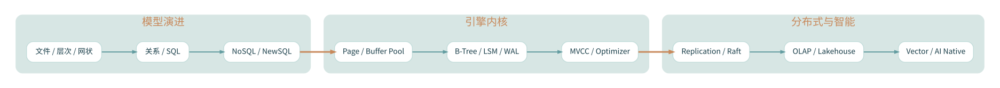

THE HISTORY OF DATA SYSTEMS / KNOWLEDGE ATLAS
数据库 · 进化与内核
从文件系统与关系模型，到分布式一致性、向量检索与 Agent 记忆
知识模块 3专题文章 4讨论时段 2026-10-01
专题全景图 / THE HISTORY OF DATA SYSTEMS下载 Mermaid 源文件 ↓

查看可编辑 Mermaid 全景图源码
flowchart LR
classDef hub fill:#10374a,color:#ffffff,stroke:#4a8b9a,stroke-width:2px;
classDef node fill:#f0f7f6,color:#1b4452,stroke:#accfd0,stroke-width:1px;
subgraph G0["模型演进"]
N00["文件 / 层次 / 网状"]
N01["关系 / SQL"]
N02["NoSQL / NewSQL"]
end
N00 --> N01
N01 --> N02
subgraph G1["引擎内核"]
N10["Page / Buffer Pool"]
N11["B-Tree / LSM / WAL"]
N12["MVCC / Optimizer"]
end
N10 --> N11
N11 --> N12
subgraph G2["分布式与智能"]
N20["Replication / Raft"]
N21["OLAP / Lakehouse"]
N22["Vector / AI Native"]
end
N20 --> N21
N21 --> N22
N02 ==> N10
N12 ==> N20
class N00 node
class N01 node
class N02 node
class N10 node
class N11 node
class N12 node
class N20 node
class N21 node
class N22 node
CURATED RESEARCH
阅读路径
按知识结构组织，不以原始聊天倒序堆积。
历史会话笔记 · 主题总览
从之前的专题知识库整理而来，保留已记录的主题、状态、文件入口与下一步。
既有知识库摘要从存储到智能的进化链
讨论过的数据库进化主线：文件系统 → 层次/网状模型 → 关系模型与 SQL → 事务与 OLTP → NoSQL / 分布式 → NewSQL → 云、HTAP、Lakehouse → 向量数据库与 AI-Native 应用。
历史会话整理从一条 SQL 追踪数据库内核
研究链条：Connection → Parser/AST → Catalog → Logical Plan → Optimizer → Physical Plan → Executor → Index/Page/Buffer Pool → MVCC/WAL → Comm
历史会话整理Agent 记忆与数据库的关系
Agent 运行状态可以划分为工作记忆、情景记忆、语义记忆、程序性记忆；系统还需要事件日志、索引和可追踪的真相源。
历史会话整理本专题是已恢复聊天线索与既有笔记的整理，不等于全部聊天原文逐条备份。原文可取回的部分会清楚注明。
继续校对：
SQLite ↗PostgreSQL ↗